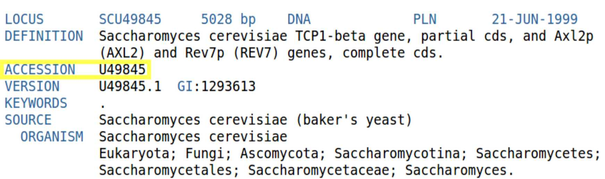
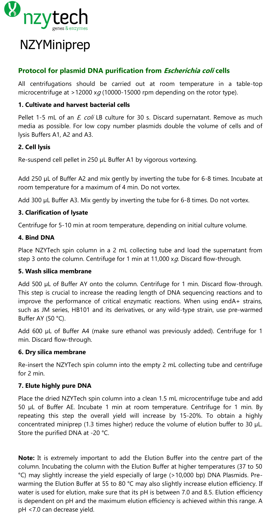
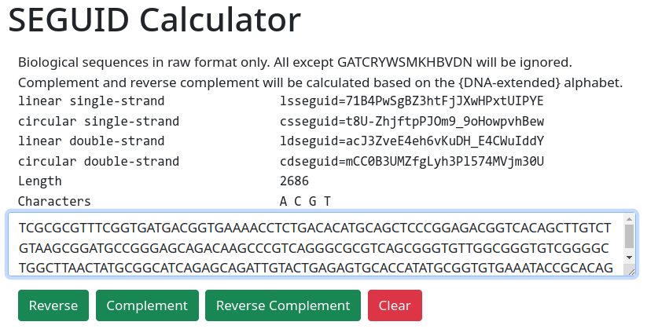
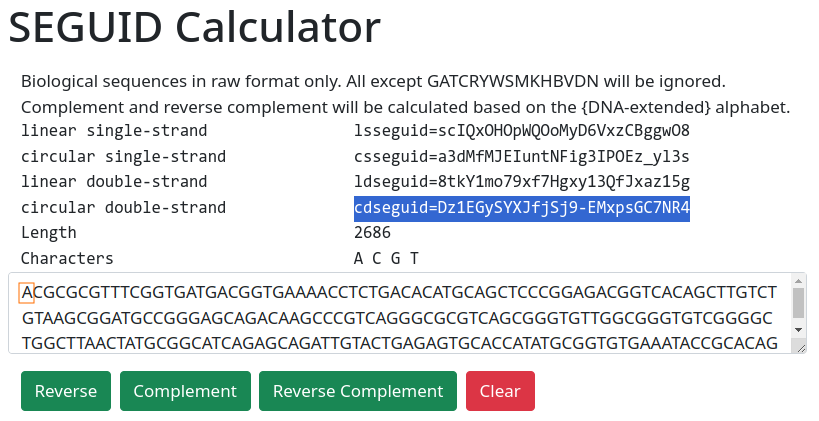

SEGUID sequence checksum calculation
What are checksums and what are they for?
Biological sequence data files are stored in databases with a unique number or identifier (or key) that is identifies the sequence. This is important so that we can be sure to always access the same file for a given key.
For GenBank, the identifier is called ACCESSION number (highlighted in yellow below).

The same sequence may be stored in different databases under different keys that are specific to each database. This is a problem since reference tables between keys have to be maintained in order to identify the same sequence.
The sequence globally unique identifier (seguid) was proposed to solve this problem by allowing the calculation of a unique 27 character code from the sequence itself.
The calculation of the SEGUID is based on a cryptographic checksum algorithm called SHA-1 (Secure Hash Algorithm 1) and should be the same in all databases as it only depends on the sequence data.
The seguid checksum has been extended (SEGUID v2) to DNA, which is a more complex case, since DNA can be linear or circular as well as single or double stranded.
SEGUID v2 consists of four separate algorithms (see table below). There is one for each combination of single/double stranded DNA and linear or circular topology.
| single strand | double strand | |
|---|---|---|
| linear | lsSEGUID | ldSEGUID |
| circular | csSEGUID | cdSEGUID |
The pUC19 is a commonly used E. coli cloning vector. It is a circular double stranded DNA molecule with 2686 base pairs (bp).

Open the pUC19 sequence in raw format here. The sequence can also be found in GenBank under the accession number L09137. The SEGUID calculator can be accessed here. Paste the pUC19 sequence in raw format (just the A, G, C and Ts) into the large window as in the image below.

You should get cdseguid=mCC0B3UMZfgLyh3Pl574MVjm30U for the circular double-stranded sequence. Now change the first character of the sequence “T” for a “A” as depicted below, but do not change anything else.

Clicking the “Calc” button should give you cdseguid=Dz1EGySYXJfjSj9-EMxpsGC7NR4. As we can see, the new result is very different although only one out of a total of 2686 nucleotides was changed.
NB! Identical sequences in UPPERCASE or lowercase or mixed case have the same seguid checksum.
Characters, numbers and spaces except the ones allowed in biological sequences are automatically removed from the input. This means that all characters except “GATCRYWSMKHBVDN” are removed from the input. The Characters window shows all the different characters present in the sequence after filtering.
IMPORTANT
Check the calculated size versus the size you expect. Check that the sequence does not contain unexpected characters.
You should be familiar with this tool as we will use it to check that the DNA sequences that result from exercises are correct. There is a button called “Reverse complement”. This button transforms the sequence in the window into its reverse complement.
Question 1: Calculate the lsseguid for the sequence “gatt” and the reverse complement. The first six characters are lsseguid=kAeu2g and for the reverse complement lsseguid=Zd45Jj.
What are the complete checksums?
Question 2: Compare the lsseguid for the sequence “ggatcc” and the reverse complement. Why are they the same? Tip!
The ldseguid checksum
A linear double stranded (ds) DNA molecule can be described by either the upper or lower strands. The linear dsDNA molecule below can be described by either TACGACC or GGTCGTA (see below).
TACGACC GGTCGTA
||||||| |||||||
ATGCTGG CCAGCAT
In order to produce a unique checksum the ldseguid calculates the checksum for the lexicographically smallest of the strands (sorted in alphabetical order) followed by the second strand. This way, the same checksum is obtained from both of the sequences above.
The clseguid and cdseguid checksums
The csseguid and cdseguid algorithms looks at the circular sequence and rotates it until the lexicographically smallest sequence rotation is found. The cdseguid algorithm does the same thing for the reverse complement of the sequence and selects the smallest.
For example, consider the circular single-stranded sequence GATT which consists of four nucleotides where the first C and the last A are connected. There are four different cyclic permutations:
| # | rotation |
|---|---|
| 1 | GATT |
| 2 | TGAT |
| 3 | TTGA |
| 4 | ATTG |
The smallest rotation is obviously the last ATTG . If the sequence is double-stranded, there are four more sequences to consider. Now the smallest sequence is AATC.
| # | rotation | reverse complement |
|---|---|---|
| 1 | GATT | AATC |
| 2 | TGAT | CAAT |
| 3 | TTGA | TCAA |
| 4 | ATTG | ATCA |
The algorithm then calculates the checksum based on the result so that it is always the same regardless of the shift of the sequence.
**Question 3:**
There are five sequences in Genbank that are very similar to the pUC19 plasmid sequence. The four text files in the table below are copies of these sequences. They all have 2696 bp and perhaps describe the same plasmid?
One differs from the others, which one?
Question 4: The sequence CAT represents a circular double stranded DNA molecule. List all the circular permutations of both the sequence and the reverse complement of the sequence. How many permutations are there? Do this manually on a piece of paper or in a text editor on your computer.
CAT
|||
GTA
Question 5: This is an individual exercise for each student.
Three sequences are given Sequence1, Sequence2 and Sequence3. They all represent double stranded circular DNA molecules. Two of the sequences represent the same circular sequence and one of the sequences is different. Which one is different? Put your answer in the “Answer” column.
The input data can be found in the TP01 Google spreadsheet where you can find your name in the leftmost column. The link to TP01 can be found in the google sheet or in blackboard.
Please answer as as indicated for the first example student “Max Maximus”.
Literature
If you want to know more, there is optional further reading:
- Our preprint describing the SEGUID v2.
- The Wikipedia article about checksums (Portuguese) or the English Wikipedia article about checksums. These articles explain checksums from a technical point of view.
- Babnigg, G., and Giometti, C. S. (2006) A database of unique protein sequence identifiers for proteome studies. Proteomics 6, 4514–4522. link. This publication suggests the SEGUID as protein sequence identifiers.
- Bassi, S., Bassi, S., and Gonzalez, V. (2007) New checksum functions for Biopython. Nature Precedings. Link. This presentation deals with SEGUID implementation.
- Website from the Argonne National Laboratory where the SEGUID was first developed link.
© Björn Johansson 2013-2025